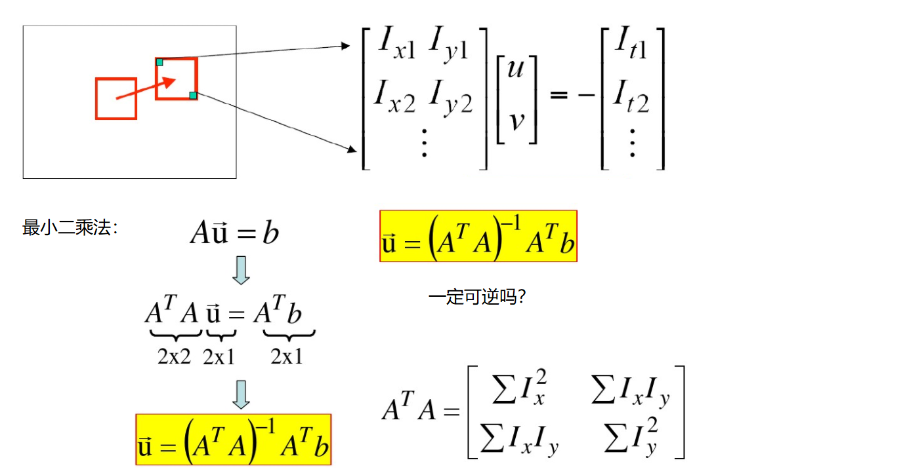

运动检测与运动估计
背景建模判断“哪些位置不像背景”，输出前景掩模；光流估计判断“这个点移动到了哪里”，输出位移。一个运动物体可以对应很多前景像素，也可以包含多个光流点。这些结果都不直接提供物体的语义类别，必须和检测、聚类或区域规则组合使用。
从帧差到混合高斯背景
帧差计算 $D_t(x,y)=|I_t(x,y)-I_{t-1}(x,y)|$，再用阈值判断变化。它容易实现，但目标移动较小时，重叠部分变化少，会出现内部空洞；相机抖动、光照突变也会让大量背景像素变成前景。
混合高斯方法给每个固定位置的像素建立历史分布。树叶摆动会使某处在叶片与天空颜色间交替，一条高斯难以描述，多个分量可以对应多种经常出现的状态。权重描述出现频率，均值与方差描述数值范围；新帧到来后再更新模型。
资料把匹配范围写成“几倍方差”，应注意量纲：标准化距离使用标准差，或等价地比较平方距离与方差倍数。不能把“灰度差小于三倍方差”直接当成严谨的概率规则。实际 MOG2 的背景分量选择、距离阈值和更新逻辑比课堂口头概括更完整。
下面保留原始“建模—开运算—轮廓”流程，补上读帧失败和阴影处理，作为教学改写：
import cv2 cap = cv2.VideoCapture('test.avi') model = cv2.createBackgroundSubtractorMOG2(detectShadows=True) kernel = cv2.getStructuringElement(cv2.MORPH_ELLIPSE, (3, 3)) try: while True: ok, frame = cap.read() if not ok or frame is None: break raw_mask = model.apply(frame) foreground = cv2.threshold(raw_mask, 200, 255, cv2.THRESH_BINARY)[1] foreground = cv2.morphologyEx(foreground, cv2.MORPH_OPEN, kernel) contours = cv2.findContours(foreground, cv2.RETR_EXTERNAL, cv2.CHAIN_APPROX_SIMPLE)[-2] for contour in contours: if cv2.arcLength(contour, True) > 188: x, y, w, h = cv2.boundingRect(contour) cv2.rectangle(frame, (x, y), (x+w, y+h), (0, 255, 0), 2) finally: cap.release()
阈值 200 用于排除中间灰度阴影标记，是否启用阴影检测必须与处理方式对应。周长 188 来自演示场景，分辨率改变后并不保持相同物理意义；周长大也可能只是形状破碎，实际还应检查面积与区域连通性。模型刚启动时尚未积累背景，最初几帧不适合直接统计稳定效果。
光流方程为什么欠定
亮度恒定假设为 $I(x,y,t)=I(x+u\Delta t,y+v\Delta t,t+\Delta t)$。做一阶展开并除以时间间隔，得到
$$I_xu+I_yv+I_t=0.$$
一个像素只有一个方程，却有水平速度 $u$ 和竖直速度 $v$ 两个未知数。Lucas–Kanade 假设小窗口内共享相同运动，把多个像素的方程堆叠成 $A\mathbf{v}=\mathbf{b}$，求最小二乘解。矩阵 $A^TA$ 与角点章节中的梯度结构矩阵形式一致，因此在平坦区域或只有单方向边缘时，估计会不稳定；角点通常更适合追踪。
亮度恒定、小运动、局部运动一致是近似条件。反光、遮挡、快速运动或窗口内含不同物体都会破坏它们。金字塔先在缩小图上估计粗位移，再向高分辨率细化，从而扩大可处理位移范围，但并不能解决任意剧烈运动。

点集的形状与状态筛选
goodFeaturesToTrack 返回的点通常形如 (N,1,2)，最后两个数是 (x,y)。calcOpticalFlowPyrLK 返回新位置、状态和误差；必须用状态筛除失败点，不能把所有输出都画成可靠轨迹。
points = cv2.goodFeaturesToTrack(old_gray, maxCorners=100, qualityLevel=0.3, minDistance=7) if points is not None: new_points, status, error = cv2.calcOpticalFlowPyrLK( old_gray, new_gray, points, None, winSize=(15, 15), maxLevel=2, criteria=(cv2.TERM_CRITERIA_EPS | cv2.TERM_CRITERIA_COUNT, 10, 0.03)) if new_points is not None and status is not None: valid = status.ravel() == 1 previous = points[valid].reshape(-1, 2) current = new_points[valid].reshape(-1, 2) points = current.reshape(-1, 1, 2) old_gray = new_gray.copy()
maxCorners 限制初始点数，qualityLevel 是相对最强角点响应的质量门槛，minDistance 控制点间距离。winSize 是局部窗口，maxLevel=2 包括原图层和两个更粗层，不是只计算两个点。
更新时既要替换旧图，也要替换旧点；只更新一项会让两者不属于同一帧。绘图前把浮点坐标转成整数。点全部丢失时应重新检测，否则跟踪只会不断减少；继续使用空点集无法凭空发现新对象。
把中间结果变成可判断的证据
背景检测可分别记录每帧前景占比、轮廓面积和检测框数量。若前景占比突然接近整幅图，应优先检查相机移动或光照变化；若只有细碎小轮廓增多，再检查噪声与形态学参数。不同原因不应统一通过提高阈值掩盖。
光流则可记录有效点数和位移分布。正常情况下，局部同一物体上的点应具有相近运动趋势；少数远离主群的位移可能对应错误匹配或遮挡。叠加轨迹时，绘图掩模可以跨帧累积，但用于求光流的灰度图应保持原始内容，不能包含之前画上去的彩色轨迹。
练习
- 为什么停下来的车辆可能逐渐被背景模型吸收？
- 为什么一条长直线上的点难以确定沿线运动？
- 需要稳定运动轨迹时，只判断
status==1足够吗？
- 自适应模型持续学习，长时间不变的车辆像素可能成为常见背景状态，应根据业务决定学习率、更新策略和目标保留方式。
- 沿着直线移动时局部外观变化很小，梯度只约束法线方向，这是孔径问题的表现。
- 不一定。还可检查误差、位移大小、前后向一致性与遮挡，并在点集不足时补点；状态成功只表示算法完成了局部估计。